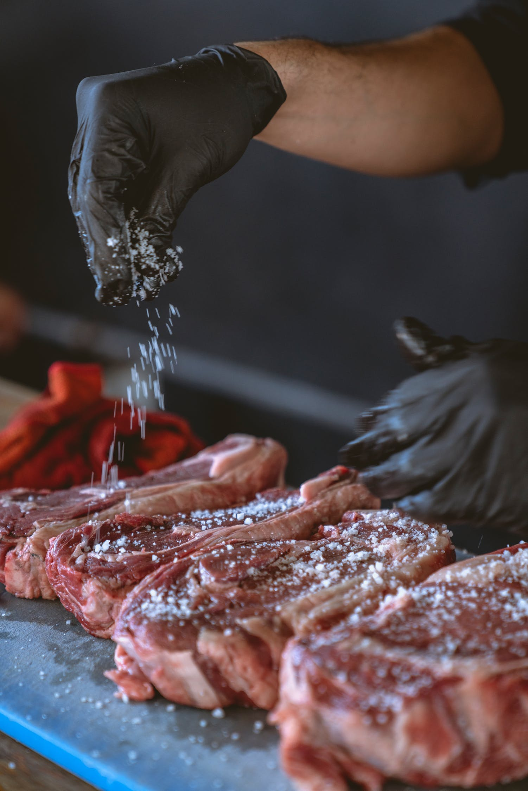

Reverse Pan Seared Steak with Wine Sauce

Recipes from Serious Eats and NY Times
Ingredients
- 2 (1 1/2– to 2-inch-thick) ribeye, strip, porterhouse, or T-bone steaks (about 1 pound/450g each), or 4 tenderloin steaks (6 to 8 ounces/170 to 225g each)
- Kosher salt and freshly ground black pepper
- 2 tablespoons (30ml) vegetable, canola, or rice bran oil
- 2 tablespoons (30g) unsalted butter
- 2 shallots, thinly sliced
- 2 tablespoons good brandy, preferably Cognac
- 1/3 cup of dry red wine
- 1/3 cup of beef or chicken stock, preferably homemade
- 4 sprigs of thyme or rosemary (optional)
Directions
- Generously season steak(s) all over with salt and pepper. If desired, set steak(s) on a wire rack set in a rimmed baking sheet and refrigerate, uncovered, overnight to dry out the exterior. Otherwise, proceed with the next step.
- If Cooking in the Oven: Set steak(s) on a wire rack set in a rimmed baking sheet. Preheat oven to anywhere between 200 and 275°F (93 and 135°C); if your oven goes lower, you can set it to an even lower temperature, though it will take longer to cook.
- Place steak(s) in the oven and cook until an instant-read thermometer registers 105°F (41°C) for rare, 115°F (46°C) for medium-rare, 125°F (52°C) for medium, or 135°F (57°C) for medium-well. This will take about 20 minutes for rare steak and up to about 40 minutes for medium-well; cooking time can vary dramatically depending on many factors, so check often.
- Just before steak(s) come out of the oven, add 2 tablespoon (30ml) oil to a cast iron, carbon steel, or heavy stainless steel skillet and heat over high heat until smoking. Add steak(s), butter, and herbs (optional) to skillet and cook until each side is well browned, about 45 seconds per side. Using tongs, hold steak(s) sideways to sear edges.
- Remove steaks. Mince shallots and add to still hot pan, cooking over medium heat until lightly browned. Add brandy and use a lighter or long match to set the brandy on fire (stand back when you do this). Let the flames die out, then add red wine and cook until reduced and syrupy. Add stock and boil until reduced and thickened.
- Whisk sauce, adding additional butter, herbs or toppings (if desired). Remove pan from heat. Serve steaks and sauce.